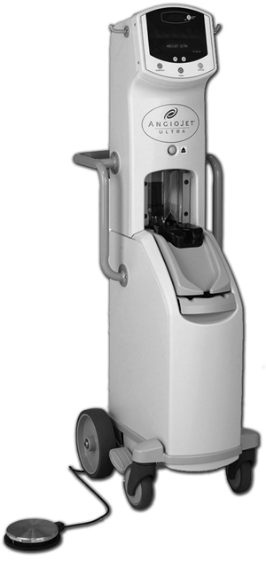
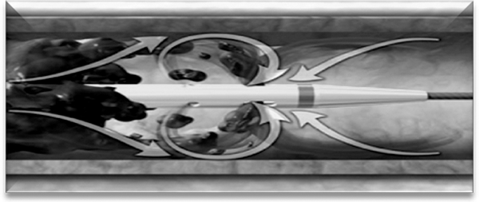
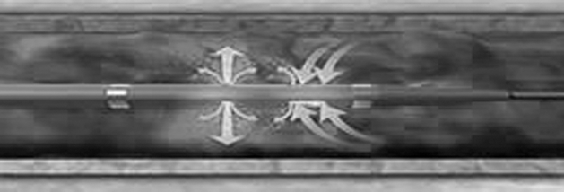
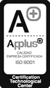

Angio jet ultra
Sistema de extracción de trombos


DESCRIPCIÓN:
• Es un sistema avanzado de trombectomía mecánica reolítica para eliminar trombos en arterias y venas.
• Comercializa diferentes tipos de catéteres para indicaciones en arterias coronarias nativas e injerto, arterias y venas periféricas y conductos arteriovenosos A/V para hemodiálisis.
CARACTERÍSTICAS:
Familia de catéteres
• Solent Dista Thrombectomy Set.
• Solent Distaflex Thrombectomy Set.
• SpiroFlex (rapid Exchenge) Ultra Thrombectomy Set.
• SpiroFlex VG (rapid Exchenge) Ultra Thrombectomy Set.
OPCIÓN POWER PULSE:
• Es la combinación de solución salina con un trombolítico que le permite desfragmentar el trombo.

Familia de catéteres
• Solent Proxi Ultra Thrombectomy Set.
• Solent Omni Ultra Thrombectomy Set.
DATOS COMPLEMENTARIOS: Para mayor información y asesoría técnica, favor de comunicarse a:

JUAMA, S.A. DE C.V.
Tels.: (55) 3098-9712, 3098-9727 y 3098-9737
Fax: (55) 5666-7694
e-mail: medica@juama.com
www.juama.com